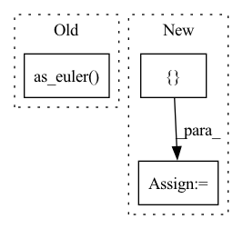

Pattern ID :35772

Before Change
pose = info.pose
position = np.array([pose.position.x, pose.position.y, pose.position.z])
orientation = np.array([pose.orientation.x, pose.orientation.y, pose.orientation.z, pose.orientation.w])
yaw = Rotation.from_quat(orientation).as_euler("zyx")[2]
layout = layer_data.layout
dims = layout.dim
After Change
length_x = info.length_x
length_y = info.length_y
resolution = info.resolution
res_grid = np.array([resolution, resolution])
if resolution == 0.0:
warnings.warn("We skip DEMs with resolutions = 0.0")
continue
In pattern: SUPERPATTERN
Frequency: 3
Non-data size: 3
Instances
Fragment ID: 101803713
Project Name: mstoelzle/solving-occlusion
Commit Name: d10a796a2c2cf43d3da02a3db770a01cde449b78
Time: 2021-01-07
Author: maximilian@stoelzle.ch
File Name: src/dataset_generation/anybotics_rosbag_dataset_generator.py
M Class Name: AnyboticsRosbagDatasetGenerator
N Class Name: AnyboticsRosbagDatasetGenerator
M Method Name: run(1)
N Method Name: run(1)
M Parent Class: BaseDatasetGenerator
N Parent Class: BaseDatasetGenerator
M File Name: src/dataset_generation/anybotics_rosbag_dataset_generator.py
N File Name: src/dataset_generation/anybotics_rosbag_dataset_generator.py
M Start Line: 67
M End Line: 157
N Start Line: 61
N End Line: 153
'>
Before Change
// Intrinsic rotations
seq = seq.upper()
assert_allclose(
angles, Rotation.from_euler(seq, angles).as_euler(seq))
def test_as_euler_degenerate_asymmetric_axes():
After Change
for seq_tuple in permutations("xyz"):
// Extrinsic rotations
seq = "".join([seq_tuple[0], seq_tuple[1], seq_tuple[0]])
rotation = Rotation.from_euler(seq, angles)
angles_quat = rotation.as_euler(seq)
angles_mat = rotation._as_euler_from_matrix(seq)
assert_allclose(angles, angles_quat, atol=0, rtol=1e-13)
assert_allclose(angles, angles_mat, atol=0, rtol=1e-9)
test_stats(angles_quat - angles, 1e-16, 1e-14)
test_stats(angles_mat - angles, 1e-15, 1e-13)
// Intrinsic rotations
seq = seq.upper()
rotation = Rotation.from_euler(seq, angles)
angles_quat = rotation.as_euler(seq)
angles_mat = rotation._as_euler_from_matrix(seq)
assert_allclose(angles, angles_quat, atol=0, rtol=1e-13)
assert_allclose(angles, angles_mat, atol=0, rtol=1e-9)
test_stats(angles_quat - angles, 1e-16, 1e-14)
'>
Fragment ID: 101803699
Project Name: scipy/scipy
Commit Name: 316159b15927f5c4eaef6b1092464c7266bea489
Time: 2022-12-07
Author: 15084103+evbernardes@users.noreply.github.com
File Name: scipy/spatial/transform/tests/test_rotation.py
M Class Name: AnonimousClass
N Class Name: AnonimousClass
M Method Name: test_as_euler_symmetric_axes(0)
N Method Name: test_as_euler_symmetric_axes(0)
M Parent Class:
N Parent Class:
M File Name: scipy/spatial/transform/tests/test_rotation.py
N File Name: scipy/spatial/transform/tests/test_rotation.py
M Start Line: 597
M End Line: 616
N Start Line: 626
N End Line: 653
'>
Before Change
vehicle_attitude = Rotation.from_quat(
messaging.as_np_quaternion(self.vehicle_geopose.pose.orientation)
)
gimbal_rpy = vehicle_attitude.as_euler("xyz", degrees=True)
gimbal_rpy[1] -= 90
gimbal_attitude = Rotation.from_euler("xyz", gimbal_rpy, degrees=True)
return messaging.as_ros_quaternion(gimbal_attitude.as_quat())
else:
After Change
return None
// Gimbal roll & pitch/tilt is assumed stabilized so only need yaw/pan
yaw_mask = np.array([1, 0, 0, 1]) // TODO: remove assumption
vehicle_yaw = (
messaging.as_np_quaternion(self.vehicle_geopose.pose.orientation) * yaw_mask
)
gimbal_quaternion_frd = messaging.as_np_quaternion(
self._gimbal_device_attitude_status.q
)
gimbal_quaternion_ned = (
vehicle_yaw * gimbal_quaternion_frd
) // TODO: ENU instead of NED? ROS convention?
gimbal_quaternion_ned = messaging.as_ros_quaternion(gimbal_quaternion_ned)
'>
Fragment ID: 101803709
Project Name: hmakelin/gisnav
Commit Name: c0c2b9588cbd33850ba1beb40a96fa97ed6fe752
Time: 2023-04-02
Author: hmakelin@protonmail.com
File Name: gisnav/nodes/autopilot_node.py
M Class Name: AutopilotNode
N Class Name: AutopilotNode
M Method Name: gimbal_quaternion(1)
N Method Name: gimbal_quaternion(1)
M Parent Class: BaseNode
N Parent Class: BaseNode
M File Name: gisnav/nodes/autopilot_node.py
N File Name: gisnav/nodes/autopilot_node.py
M Start Line: 262
M End Line: 274
N Start Line: 265
N End Line: 282